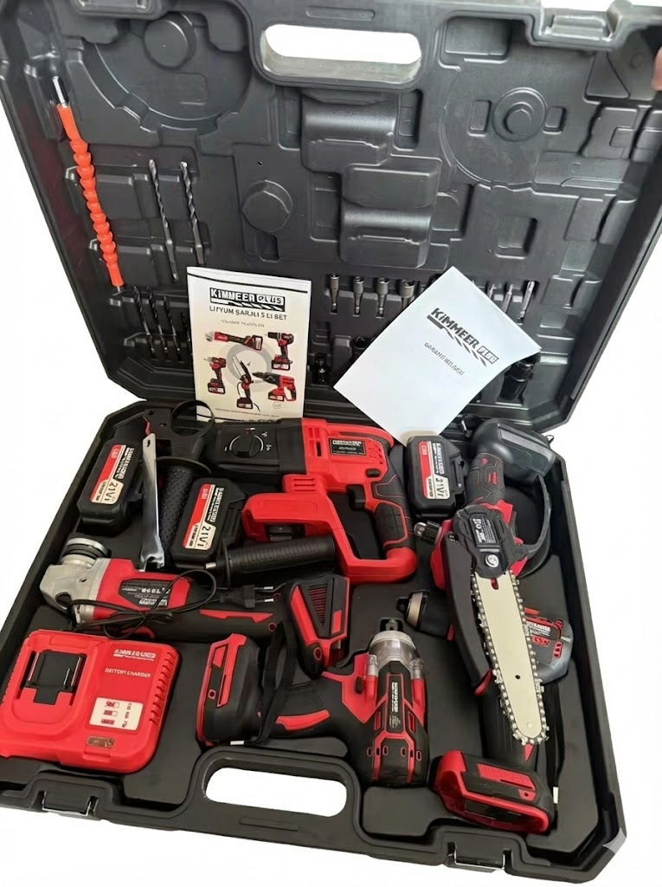

Kimmer Plus 21V Akülü 5'li Set
El Aletleri
Profesyonellerin ve ev kullanıcılarının tüm ihtiyaçlarına cevap verecek güç tek sette! Kırıcı delici, taşlama, somun sıkma, vidalama ve zincirli budama testeresi içeren komple çözüm.
Teknik Özellikler
- Motor Voltajı: 21V Yüksek Performans
- Akü: 2 Adet Li-ion Akü
- Şarj Süresi: ~1 Saat (Hızlı Şarj)
- Set İçeriği: 5 Farklı Alet
- Renk: Kırmızı
- Taşıma: Taşıma Çantası Dahil
Fiyat Bilgisi İçin:
Ürün Avantajları
2 Adet Li-ion Akü
Hızlı Şarj (~1 Saat)
5 Alet Tek Sette
Taşıma Çantası
Kimmer Plus 21V - Profesyonel 5'li Akülü Set
Kimmer Plus 21V Akülü 5'li Set, dayanıklılığı, yüksek performansı ve ergonomik tasarımıyla her türlü işte yanınızda. İster şantiyede ister evde, her yerde gücün, pratikliğin ve dayanıklılığın simgesi!
Set İçeriği:
- Kırıcı Delici Hilti: Beton, taş ve tuğlada üstün delme gücü
- Taşlama Makinesi: Kesme, parlatma ve yüzey temizleme işlemlerinde yüksek devir performansı
- Somun Sıkma / Darbeli Somun Sökme: Tork gücüyle sıkma ve sökme işlemlerini saniyeler içinde tamamlar
- Vidalama Makinesi: Hızlı ve hassas montaj işleri için ideal
- Zincirli Budama Testeresi: Ağaç, dal ve odun kesiminde pratik kullanım
Avantajları:
- Tüm İşler İçin Tek Çözüm: 5 farklı alet tek pakette
- Kablosuz Özgürlük: Priz arama derdine son!
- Yüksek Tork ve Darbe Gücü: Zorlu işlerde bile üstün performans
- Profesyonel Kalite: Uygun fiyat garantisi
- Ergonomik Tasarım: Maksimum konfor için özel tutma sapı
Teknik Tablo - Kimmer Plus 21V 5'li Set
| Marka | Kimmer Plus |
| Motor Voltajı | 21V |
| Akü Tipi | Li-ion |
| Akü Adedi | 2 Adet |
| Şarj Süresi | ~1 Saat (Hızlı Şarj) |
| Gövde Rengi | Kırmızı |
| Taşıma | Taşıma Çantası Dahil |
Set İçeriği Detayları
| 1. Kırıcı Delici | Beton, taş, tuğla delme |
| 2. Taşlama Makinesi | Kesme, parlatma, yüzey temizleme |
| 3. Somun Sıkma | Darbeli somun sökme/sıkma |
| 4. Vidalama Makinesi | Hızlı ve hassas montaj |
| 5. Budama Testeresi | Zincirli, ağaç/dal kesimi |
Garanti ve Servis
2 Yıl Garanti
Motor ve elektronik aksam dahil
Akü Garantisi
1 yıl akü değişim garantisi
7/24 Destek
Telefon ve WhatsApp teknik destek
Diğer Ürünler

Afacan R18
18mm Demir Bükme

Wacker Neuson M-1500
Beton Vibratör